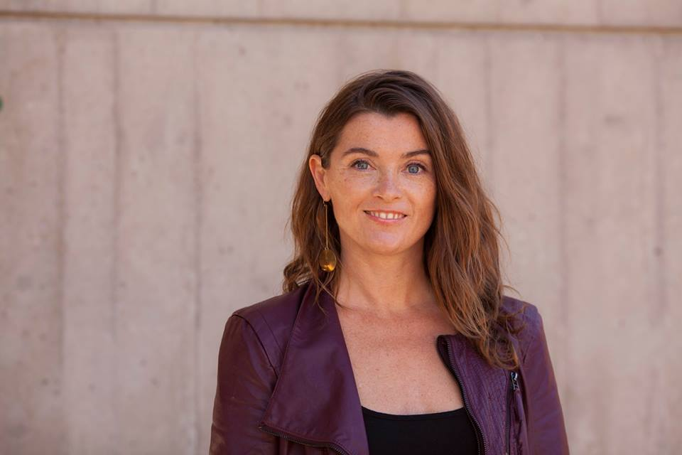

2016 Speakers!

Jay Flores, STEM Ambassador at Rockwell Automation, has a mission: instilling a passion for science, technology, engineering, and mathematics (STEM) in today’s young minds. As a guest speaker, Jay is masterful in connecting STEM to everyday life and motivating students to become tomorrow’s innovators. His high energy and intellect have been recognized by the Society of Hispanic Professional Engineers (SHPE), who elected Jay when he was 19 years old as the youngest voting national board member in SHPE history. He was also honored as one of 20 youths to present to congressional leaders and policy makers in 2014 through a LOFT (Leaders on the Fast Track) fellowship. Jay’s STEM advocacy and outreach efforts support Rockwell Automation’s Engineering Our Future™ and Inspiring Young Minds™ philanthropic priorities, including programs such as Project Lead the Way, ST Math and FIRST® (For Inspiration and Recognition of Science and Technology).

Sara L. McKinnon. McKinnon is an Assistant Professor of Rhetoric, Politics and Culture in the Department of Communication Arts at the University of Wisconsin-Madison. Her research and teaching is in the areas of intercultural rhetoric, globalization studies, and gender studies. She is the author of Gendered Asylum: Race and Violence in U.S. Law and Politics (University of Illinois Press, 2016), which charts the incorporation of gender provisions in US refugee and asylum law within the context of broader national and global politics. Her co-edited volume Text + Field: Innovations in Rhetorical Method (Penn State University Press, 2016) considers a range of approaches for using ethnographic and field-based research methods in doing rhetorical research. She is currently working on a co-authored book, Transgender Youth in Schools: An Exploration of Student, Parent and Staff Experiences (Columbia University Press) that draws on interviews with transgender and gender variant students in Wisconsin, along with interviews with school administrators and staff, and the parents of transgender youth in order to paint a picture of daily life in school for trans and gender variant students. The book spotlights trans students’ experiences and offers recommendations to school administrators working to create more trans inclusive and safe school environments. She teaches classes in Intercultural Communication, Conflict, Performance and Globalization Studies, and in her free time, she is the host of the radio program Sara’s Table on 89.9 WORT (http://www.wortfm.org/news-talk/news/ioby/saras-table/) and she enjoys biking, gardening and spending time with friends.